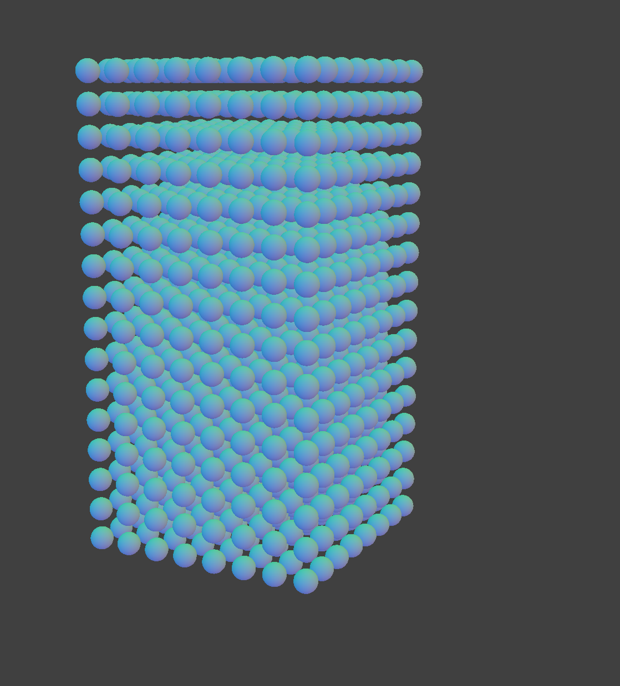
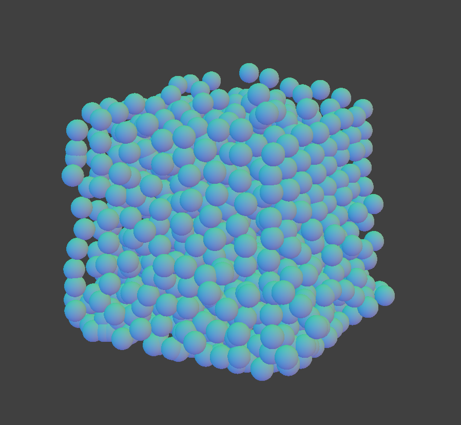
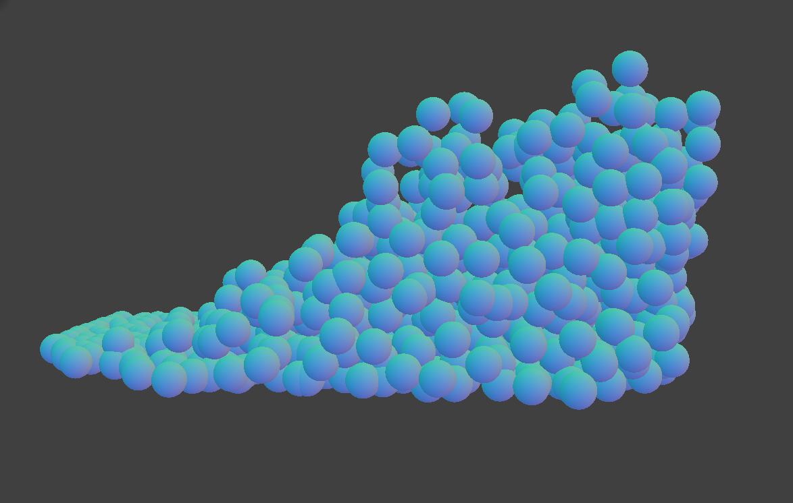
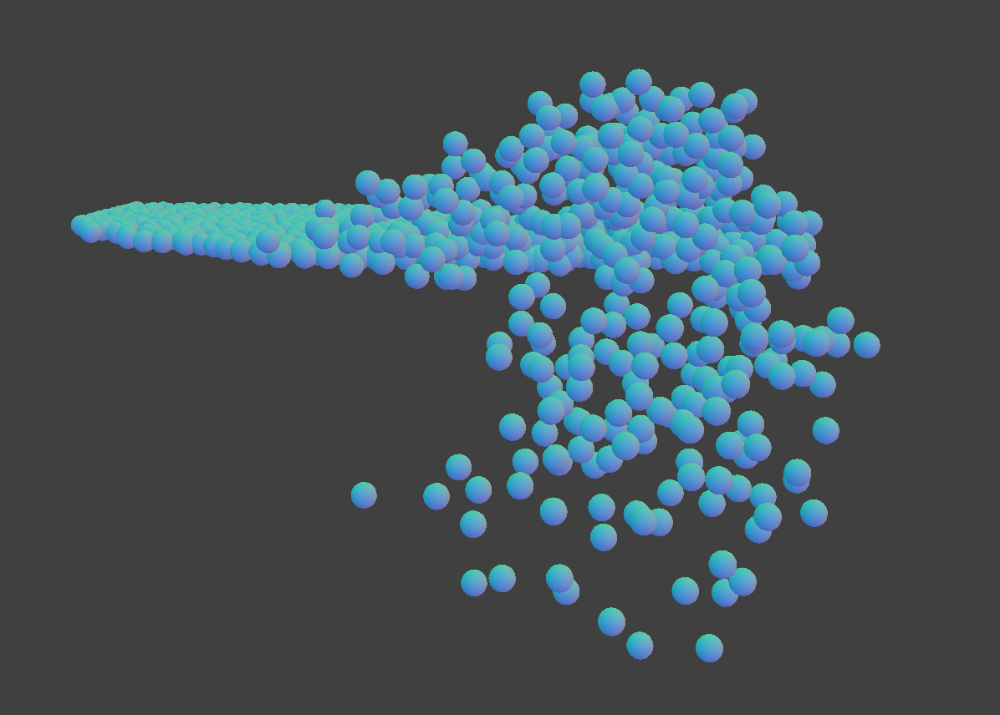

Water/fluid simulation is a very important problem in computer graphics because it creates a sense of realism in all sorts of graphics applications, including movies, video games, and VR/AR. Our group was inspired by this problem, so we decided to build a realistic water simulation as our final project. In our project, we simulate the movement of water in a small box given initial forces and conditions. Our system is a real-time, particle-based simulation that represents water through hundreds of small particles. The simulation calculates how each of these particles interacts with neighboring elements of the scene, and together these particles represent one large body of water.
As a starting point for our code, we found it natural to jump off of the ClothSim code from project 4 because the movement of water closely models the movement of cloth, and we felt that we could structure parts of our water simulation the same way that we structured parts of our project 4 code.
In order to construct the actual water, we created 1000 particle objects. Each particle object contained a number of attributes: a static starting position, the current timestep’s position, the previous timestep’s position, velocity, pressure, mass, density, radius, and sum of total forces acting on the particle at the current timestep. At the beginning of the simulation, we constructed all the particle objects and assigned them a uniform position within the box area, as well as a velocity of 0. All of the particles, once constructed, were added to a vector attribute of the water struct, named particles.
Each timestep, we spatially hashed all of the particles for efficiency, then looped through all of the particles and completed four steps: calculate the correction vector needed to account for collisions between the current particle p and nearby particles, calculate the updated density, pressure, and viscosity, calculate the total forces acting on the particle p, and update the velocity and position of the particle p. For step 1, we implemented a self-collision-like process, where we went through all of the nearby particles. Nearby particles were found by checking whether each of the particles that hashed to the same bin as the current particle was within twice the radius away. For each of those nearby particles, we added a correction vector to p’s position, pushing it away from the nearby particle by a distance of 2 * p’s radius - (distance between p and the other particle). The further away the other particle was, the smaller its impact on p’s position, and the less it was “pushing p away.” For step 2, we first calculated the updated density by finding the distance between the current particle p and every other particle that was hashed to the same box. We then calculated the Gaussian kernel with the distance between particles and scaled that kernel value by the mass of the other particle. The Gaussian Kernel is 0 if the distance between the two particles is >= 2 * h (where h is the smoothing width -- we set this to 0.4) or 1 / (pi1.5 * h3) * e(distance^2 / h^2). We calculated the updated viscosity (which is a force that diffuses the motion of water) using the following approximation: 6 * pi * 1.004 * 10 ^ -6 * particle radius *particle velocity (where 1.004 * 10 ^ -6 is the kinematic viscosity coefficient for water at 20 degrees Celsius). Finally, we calculated the updated pressure using the equation 0.0097292 * particle depth / particle’s density, where 0.0097292 is the normal pressure gradient of freshwater, scaled down (because the force coming from pressure was initially too strong and caused the water to rocket upwards). In this equation, depth refers to how far down the particle is relative to the highest particle. For step 3, we defined the total forces acting on the particle as the sum of gravity, the viscosity, and pressure (where gravity is just a constant 9.8 m/s^2 going downwards). Finally, for step 4, we divided the net force by the particle’s mass to get the particle’s acceleration. We then updated the particle’s velocity by incrementing by acceleration * delta_t, and finally, we updated the particle’s position by its velocity * delta_t.
In terms of how our technical approach drew from sources, we basically tied together approaches that we found across several different sources. We pulled our basic approach from “Fluid Simulation for Computer Graphics: A Tutorial in Grid Based and Particle Based Methods.” In that particular source, they suggested looping through all the particles, finding their density, using it to calculate pressure, and using pressure and gravity as the total forces in order to update the velocity and position of the particle. After we built our basic water simulation, we started to look for additions that would make our water look more realistic, and were able to add viscosity on top of pressure and gravity after reading “Motion of an Object in Viscous Fluid.”
One of the big issues that we ran into in our project was efficiency. In our initial approach, we were going through all of the particles each timestep and updating their position based on forces coming from all of the other particles in the simulation, which, as we increased the number of particles in the simulation, gradually became infeasible to do in any efficient amount of time. In order to fix this problem, we decided to take a hashing approach (which was mentioned a bit earlier), where we spatially hashed all the particles each timestep so that when we updated their positions, we were calculating their new positions based off of forces from the nearby particles rather than forces from all of the particles.
Another issue that we ran into was the fact that during self-collision, some of the particles switched hash values. This occurs when a collision causes a particle’s position to change since the hash value is based on position. Because we use spatial hashing for both self-collisions and calculating density and setting up the hash table twice in each iteration would be inefficient, we had to figure out how to incorporate the particle into the correct hashing group based on the new position. Our solution to this problem was to remove a particle from its current hash position and rehash it when a collision occurs. This is not always the most efficient choice, as we may rehash particles that don’t need to be moved, but it met the efficiency we desired.
Overall, we learned two big lessons from this project. One, we learned a lot about the similarities between cloth simulation and water simulation -- a lot of our project 4 code was very easy to convert into code for this final project. Two, we learned that there are a lot of components and forces that go into simulating water. It’s not just as simple as generating an image and moving it around; to really create a realistic looking water simulation, you have to incorporate all of the necessary forces and integrate the particles together in a way that looks realistic. Even in this project, there were several forces that we chose not to include (e.g. drag), and we ended up using approximations for others (e.g. viscosity).
|

|
|

|
|

|
|

|
Navier-Stokes equation | Definition & Facts | Britannica
Real-time Realistic Ocean Lighting using Seamless Transitions from Geometry to BRDF
Fluid Simulation For Computer Graphics: A Tutorial in Grid Based and Particle Based Methods
Particle-based Fluids with SPH
4. How to move particles and how to calculate accelarations of particles
https://www.engineersedge.com/physics/water__density_viscosity_specific_weight_13146.htm
https://www.glossary.oilfield.slb.com/en/Terms/p/pressure_gradient.aspx
https://en.wikipedia.org/wiki/Pressure_gradient
CSS Water Wave Background Tutorial
Jade Singh: My main job was to be the primary writer for the write-ups (milestone and final) for the project. In terms of coding, I also implemented most of the self-collision part of our simulation and helped repurpose the water and particle structs so they worked with self-collision.
Evan Corriere: My main job was to tear apart the ClothSim code to fit our needs for a water simulation (since we used my project 4 code as our skeleton for this project). This involved creating new structs, decoding new json elements, and replacing all cloth related components with water and particle based components. After this, I worked setting up the initial scene and rendering particles.
Jack Coyle: My main job was to do a lot of the preliminary research on the net forces on each water particle. I also wrote a lot of the code for the particle updates and added in some of the code for calculating various forces, since I did a lot of the research on that.